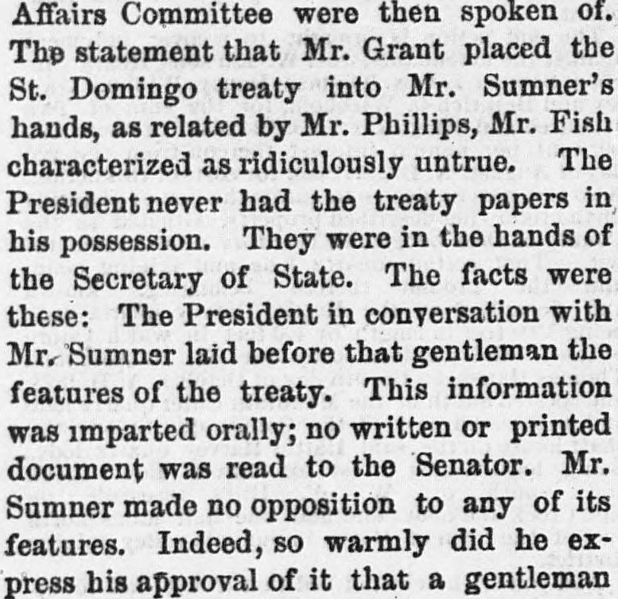
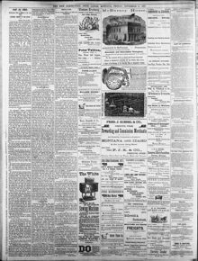

This information was imparted orally; no written or printed document wasEsta información fue impartida oralmente; no se aportó documento escrito o impreso alguno
The New North-West. Deer Lodge, Mont., November 9, 1877. Page 4. View the originalVer el original


See the full pageVer la página completaThe newspaper reported that in late December 1869 or early January 1870, President Grant discussed the features of a treaty orally with Mr. Sumner, who initially expressed warm approval of the measure. According to Mr. Fish, Sumner supported the treaty until J. M. Ashley of Ohio was not nominated as a commissioner to St. Domingo, after which Sumner opposed it. Furthermore, Mr. Fish stated that Senators Carl Schurz and Mr. Stewart determined in February that the Senate would not pass the treaty, and Sumner was not reappointed to the Foreign Affairs Committee upon the meeting of the new Congress in 1871.El rotativo dio cuenta de que a finales de diciembre de 1869 o principios de enero de 1870, el presidente Grant expuso verbalmente a Sumner las cláusulas del tratado, ante lo cual este último manifestó inicialmente un cálido beneplácito. Según Fish, Sumner mantuvo su adhesión a la iniciativa hasta que J. M. Ashley, de Ohio, quedó excluido de la designación como comisionado en Santo Domingo, momento a partir del cual combatió el proyecto. Añadió además Fish que los senadores Carl Schurz y Stewart comprobaron en febrero que la cámara alta desestimaría el tratado, no siendo reincorporado Sumner a la Comisión de Relaciones Exteriores al instalarse el nuevo Congreso en 1871.
FULL TEXT:TEXTO COMPLETO:
REMOVAL OF MR. SUMNER.REMOCIÓN DEL SR. SUMNER.
The reasons for the removal of Mr. Sumner from the chairmanship of the Foreign Affairs Committee were then spoken of. The statement that Mr. Grant placed the St. Domingo treaty into Mr. Sumner’s hands, as related by Mr. Phillips, Mr. Fish characterized as ridiculously untrue. The President never had the treaty papers in his possession. They were in the hands of the Secretary of State. The facts were these: The President in conversation with Mr. Sumner laid before that gentleman the features of the treaty. This information was imparted orally; no written or printed document was read to the Senator. Mr. Sumner made no opposition to any of its features. Indeed, so warmly did he express his approval of it that a gentleman present at the interview, who prior to that time had placed himself in opposition to the measure, was made friendly to it solely be the arguments used by Mr. Sumner. Mr. Fish said that Mr. Sumner continued to favor the treaty until the selection of a commissioner to St. Domingo came up for settlement, and when he found that J. M. Ashley, of Ohio, was not to be the nominee he then all at once lost interest in the treaty, until finally he placed himself in direct opposition to it.Las razones para la remoción del Sr. Sumner de la presidencia del Comité de Relaciones Exteriores fueron entonces tratadas. La declaración de que el Sr. Grant puso el tratado de Santo Domingo en manos del Sr. Sumner, según lo relacionado por el Sr. Phillips, el Sr. Fish la caracterizó de ridículamente falsa. El Presidente nunca tuvo los documentos del tratado en su posesión. Estaban en manos del Secretario de Estado. Los hechos fueron estos: El Presidente en conversación con el Sr. Sumner expuso ante ese caballero las características del tratado. Esta información fue impartida oralmente; ningún documento escrito o impreso fue leído al Senador. El Sr. Sumner no hizo oposición a ninguna de sus características. En efecto, tan calurosamente expresó su aprobación de él que un caballero presente en la entrevista, quien antes de ese momento se había colocado en oposición a la medida, se hizo favorable a ella solamente por los argumentos usados por el Sr. Sumner. El Sr. Fish dijo que el Sr. Sumner continuó favoreciendo el tratado hasta que la selección de un comisionado para Santo Domingo vino a ser resuelta, y cuando encontró que J. M. Ashley, de Ohio, no sería el nominado entonces de repente perdió interés en el tratado, hasta que finalmente se colocó en directa oposición a él.